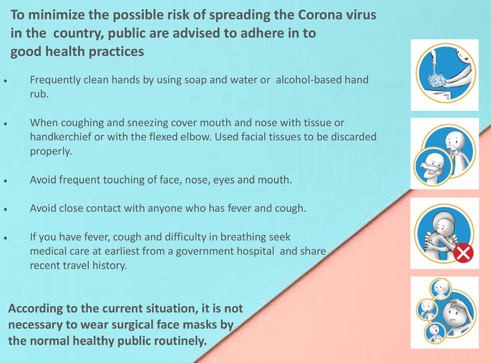

Updates On Covid-19
Covid-19
World's Situation
SriLanka's Situation
Corona Pandemic Live Map
About Covid_19
WHO(World Health Organization)
Covid-19 Global Map
Covid-19 SriLanka's News
Covid-19 Srilanka's Map

Ministry of Health Srilanka
For reliable information on Corona
Virus infection call the
24 hrs
call centre:
0710 107 107 /0113 071 073
Hotline: 117